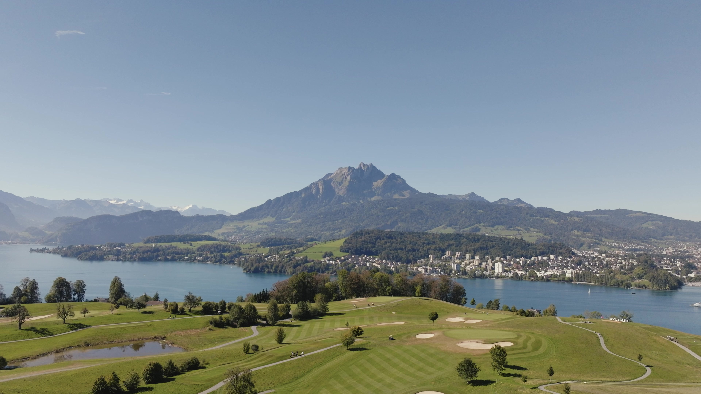
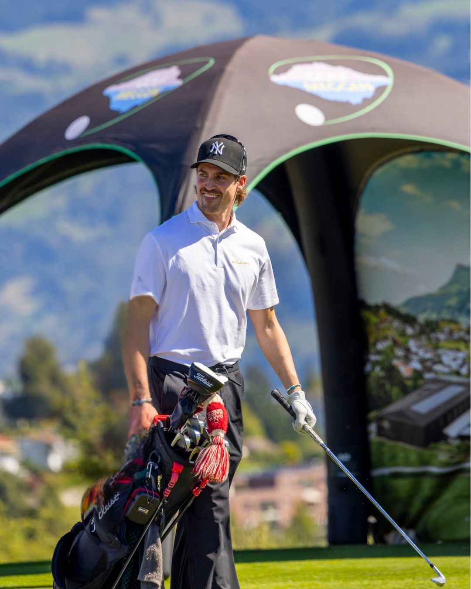
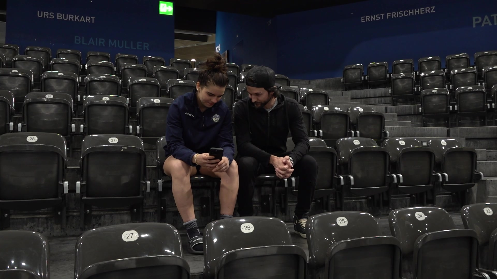
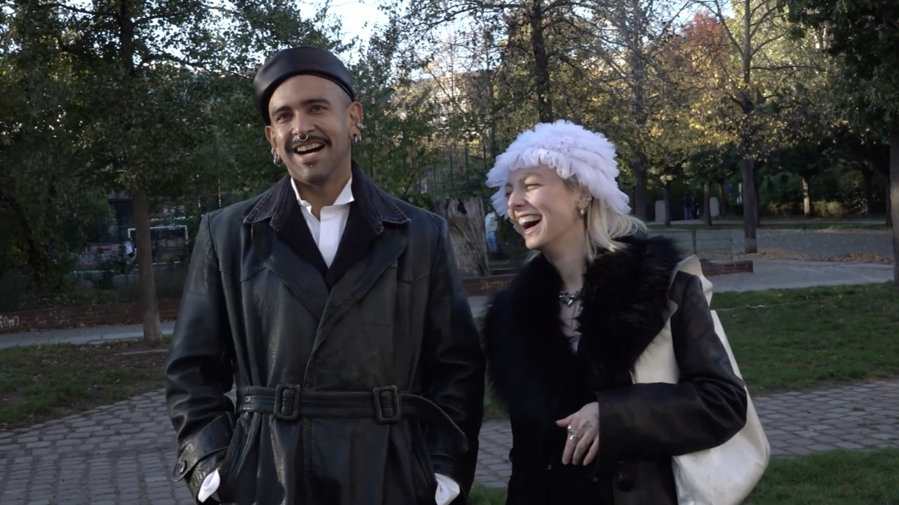
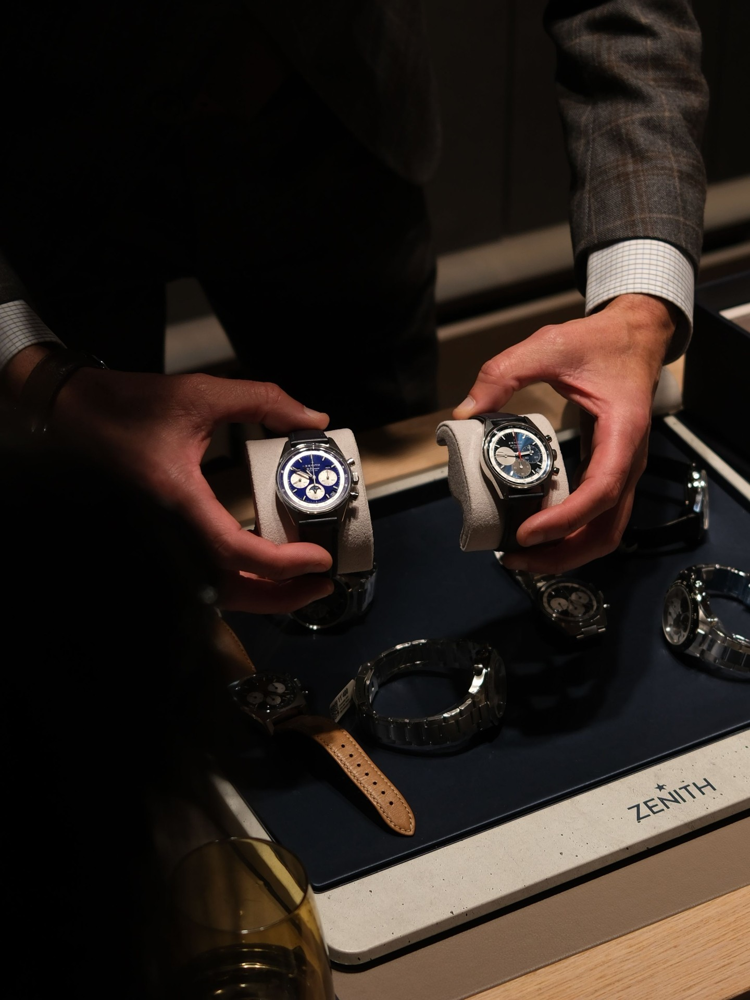

Dieses Kurzporträt begleitet Simon Inniger in seiner Rösterei in Frutigen und zeigt den Weg der Bohne vom Ursprung bis in die Tasse. Ein Film über Leidenschaft und die Kunst, das volle Potenzial eines Naturprodukts auszuschöpfen.
Ausgewählte Arbeiten / 2024—26
Eine Sammlungvisueller Momente.
Eine Auswahl an Arbeiten aus den Bereichen Fotografie und Film, bei denen Licht, Handwerk und Storytelling im Zentrum stehen.
Projekte

Für das Bvlgari Golfturnier in Meggen stand die Atmosphäre im Zentrum meiner filmischen Arbeit. Anstatt ein klassisches Event-Protokoll abzuarbeiten, fängt das Video die feinen Nuancen des Tages ein: das sanfte Licht auf dem Green, die ruhigen Momente zwischen den Abschlägen und die weite Sicht über den Vierwaldstättersee bis zum Pilatus. Es ist ein visuelles Recap, das dem Nachmittag Raum zum Atmen gibt.

Meine erste fotografische Begleitung des Bvlgari Golfturniers widmete sich den entspannten Momenten des Apéros. Vor der atemberaubenden Kulisse des Vierwaldstättersees und des Pilatus habe ich die Atmosphäre in Bildern festgehalten. Mit besonderen Gästen wie dem ehemaligen Skirennfahrer Marc Rochat und dem Harfenisten Alexander Boldachev entstand eine vielschichtige Fotoreihe. Ein facettenreicher Nachmittag – eingefangen irgendwo zwischen dem Green, sanften Harfenklängen und anregenden Begegnungen.

Leistungssteigerung, Verletzungsprävention und mehr Wohlbefinden: Warum wird der weibliche Zyklus im Leistungssport immer noch viel zu oft tabuisiert, statt als echter Wettbewerbsvorteil genutzt zu werden?
In diesem Filmbericht tauchen wir in das Thema «Zyklusbasiertes Training» ein. Wir begleiten das Women’s Team des Eishockeyvereins Zug (EVZ) beim Training in der Bossard Arena und sprechen mit Spielerin Noemi Rhyner sowie Trainer Marco Burch über den praktischen Nutzen und die Umsetzung im Trainingsalltag.
Ergänzt wird der Beitrag durch wissenschaftliche Einblicke von Sportwissenschaftlerin Nina Schwendimann (FC Thun), die aufzeigt, wie zyklusgesteuertes Training funktioniert und welches enorme Potenzial darin für Sportlerinnen steckt.

3.454 Meter über dem Meeresspiegel, grelles Gletscher-Licht und ein maximal reduziertes Setup: Die visuelle Kampagne für die Hublot Special Edition von Kirchhofer war eine echte Meisterprüfung. Das Projekt umfasst sowohl makellose Produktfotografie als auch filmisches Storytelling, um die Uhr in der rauen Schönheit des Jungfraujochs in Szene zu setzen. Ergänzt durch weitläufige Drohnenaufnahmen von Kirchhofer, fängt das begleitende Video die monumentale Weite des Aletschgletschers in ihrer ganzen Dimension ein.

Kulturhäuser, Kiez-Spätis, traditionsreiche Buchhandlungen und gemütliche Eckkneipen – es sind die Orte und vor allem die Menschen dahinter, die das Lebensgefühl und den Zusammenhalt einer Stadt prägen.
Der Filmbericht portraitiert vier davon: das Kulturhaus Spandau mit Maria Weber, den Bücherbogen am Savignyplatz mit Kay Usenbinz, den Späti47 mit Hassan und die Traditionsgaststätte «Zum Alten Krug» mit Deniz und Sarah. Vier Orte, vier Perspektiven – ein gemeinsames Stück gelebte Kultur und Nachbarschaft.

Für den gemeinsamen Event von Hublot und Zenith lag mein fotografischer Fokus auf der intimen Atmosphäre der Uhrenpräsentation. Die Bildserie fängt das Zusammenspiel von präziser Handwerkskunst und persönlicher Beratung ein – vom ersten Begutachten der Zeitmesser auf den eleganten Trays bis zum spürbaren Moment des Anprobierens. Gedämpftes Licht, feine Reflexionen und die ungeteilte Aufmerksamkeit für das Detail prägen diese visuelle Momentaufnahme.

Reels für die Kanäle der Embassy Kirchhofer Group – gebündelt als eigener Feed.